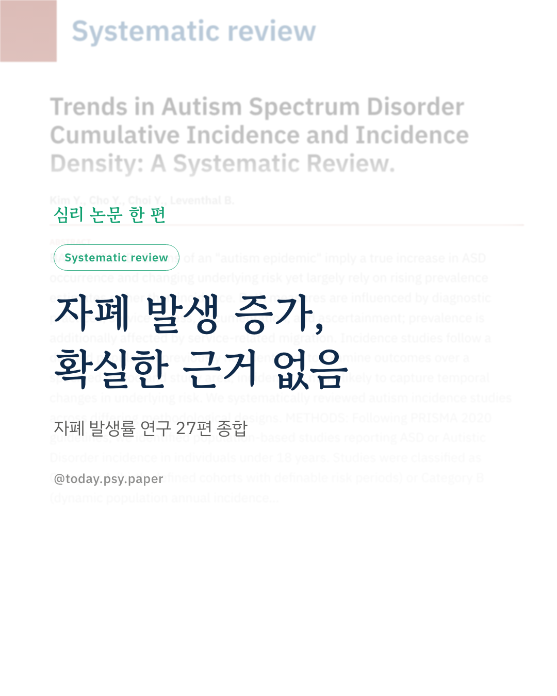

자폐 스펙트럼 장애가 늘고 있다는 말을 자주 듣습니다. 그런데 이 주장의 근거는 대부분 '유병률', 즉 특정 시점에 진단을 받은 사람의 비율이고, 이 수치는 진단 기준과 서비스 접근성, 진단을 받기 위한 이사까지 영향을 받습니다. 연구진은 새로 발생한 사례를 세는 '발생률'이 실제 위험 변화를 더 잘 보여 준다고 보고, 18세 미만 자폐 발생률을 보고한 인구 기반 연구 27편을 체계적으로 검토했습니다. 연구는 두 종류로 나눴습니다. 특정 시기에 태어난 아이들을 정해진 기간 동안 추적한 연구가 14편, 해마다 행정 자료로 새 진단을 집계한 연구가 13편이었습니다. 전체적으로 발생률은 올랐지만, 진단에서 빠진 아이까지 찾아내는 꼼꼼한 출생 집단 연구에서는 증가 양상이 일관되지 않았고 남녀 비율 차이도 작았습니다. 반대로 진단 누락이 많은 행정 자료 연구에서는 꾸준한 증가가 나타났고, 넓은 진단 기준을 쓸수록 증가가 더 컸습니다. 연구진은 지금까지의 자료로는 자폐가 실제로 더 많이 생기고 있다는, 이른바 '자폐 유행'을 뒷받침할 설득력 있는 근거가 없다고 결론 내렸습니다. 발생률 증가의 상당 부분은 진단 관행과 서비스 접근의 변화로 설명될 수 있습니다. 한계도 있습니다. 연구마다 진단 정의와 추적 기간이 달라 수치를 합치지 못하고 서술로만 비교했습니다. Biological Psychiatry (2026), 'Trends in Autism Spectrum Disorder Cumulative Incidence and Incidence Density: A Systematic Review' DOI: 10.1016/j.biopsych.2026.10.022 #임상심리 #정신건강정보 #심리학연구 #논문리뷰 #자폐스펙트럼장애 #자폐 #발달장애 #신경발달장애
python3 publish.py 42962960